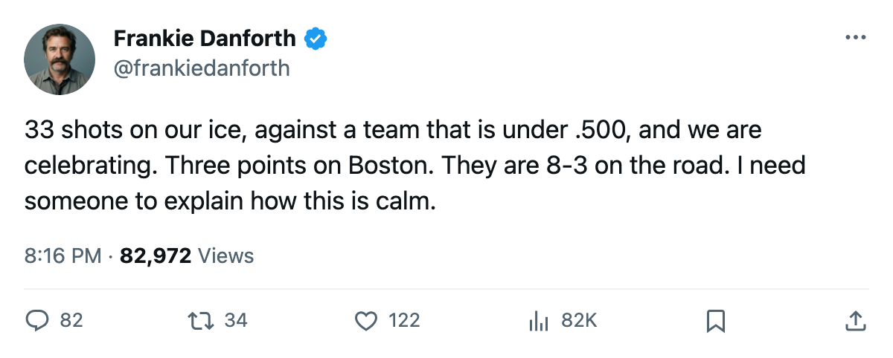
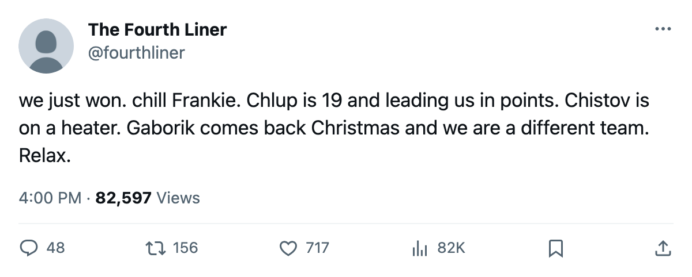

TOR
TOR BOS
BOS OTT
OTT WSH
WSH PHI
PHIDANFORTH: Code Yellow, 33 shots against, and a win that looks like a warning
The Philadelphia game should terrify anyone counting points in the Northeast race
 Frankie DanforthColumnist · Queen City Telegram
Frankie DanforthColumnist · Queen City Telegram
Code Yellow

Toronto beat Philadelphia 4-3 on Wednesday. Philadelphia outshot Toronto 33-20. The Flyers are 9-8-1 and on a 2-game skid. They came into our building and threw 13 more pucks at our net than we threw at theirs, and we won because a teenager had a 3-point night and a defenceman with a $0.90M cap hit logged 26.2 minutes of work nobody asked him to do.
I am calling it Code Yellow.
The cushion over Boston is 3 points. Toronto has 30 in 20 games. Boston has 27 in 19. The Bruins are 8-3 on the road, a number that should keep every Leafs fan awake until January. Their next three are CGY at home on Saturday, Montreal on the road Tuesday, Pittsburgh at home Wednesday. If they take six of those six points, they sit at 33 in 22. Toronto plays OTT on Friday, Washington Saturday, Philadelphia Tuesday, Buffalo Wednesday. Four games, four opponents with losing records or worse. Three points is not a lead. Three points is a Tuesday.
The game itself
I will not pretend the 4-3 matters more than the 33-20. A team that lets a 9-8-1 club control the shot clock at home is a team one good night from a hot opposing goaltender turns into a regulation loss. We lost to Detroit 1-2 on a night we shot 20 or so times. We lost to Boston 2-3 on a night that was close enough to matter. Two one-goal losses, one one-goal win. The games are not being won, they are being survived, on individual nights, while the team play looks like a group still figuring out who is on the puck.
 Mats Sundin92 has 14 points in 20 games at 23.6 minutes a night. He is 34. He is carrying 41C, H2, L1C, P1C and S1. The man is doing five jobs and the winger beside him on the second line is
Mats Sundin92 has 14 points in 20 games at 23.6 minutes a night. He is 34. He is carrying 41C, H2, L1C, P1C and S1. The man is doing five jobs and the winger beside him on the second line is  Brad Richards87, who plays 13.1 minutes and has 13 points. Richards is $6.70M. The kid centering the fourth line, Petr Chlup87, is $2.34M and has 15 points in 20.4 minutes. I have been asking for a second centre since December 2004. The answer arrived in a sweater that costs less than one quarter of Richards's and plays seven more minutes a night. The coach knows this. The linesheet shows it. Richards still skates power play one while a 19-year-old does nothing on it.
Brad Richards87, who plays 13.1 minutes and has 13 points. Richards is $6.70M. The kid centering the fourth line, Petr Chlup87, is $2.34M and has 15 points in 20.4 minutes. I have been asking for a second centre since December 2004. The answer arrived in a sweater that costs less than one quarter of Richards's and plays seven more minutes a night. The coach knows this. The linesheet shows it. Richards still skates power play one while a 19-year-old does nothing on it.
The next four
Ottawa is 6-9-2 and on a 2-game slide. Their D,  Zdeno Chara82, is out.
Zdeno Chara82, is out.  Wade Redden83 is out until December 22. This is the easiest win on the schedule between now and December 20 and it goes in the building tomorrow.
Wade Redden83 is out until December 22. This is the easiest win on the schedule between now and December 20 and it goes in the building tomorrow.
Washington is 5-10-3, a 4-8 road team, and they arrive Saturday. Maxime Ouellet86 faces the club he left on January 25. If we do not take four points from these two, the panic changes colour.
The goaltender question
Mikael Tellqvist73 is -5 on the Bureau's Development Index. His base is 77, his overall reads 72. He started eight games and the team went 5-3 with him in them.  Roberto Luongo95 is 94 overall, -0 on the Index, and sat the last stretch. The coach made his choice against Detroit and Boston, and those are the two losses that cost us the Boston series and cut the lead. I am not saying bench Tellqvist. I am saying the man whose Conn Smythe is still warm is the one who should be in the crease on a Thursday against Ottawa when the lead is three points and the calendar says Boston gets its next point on Saturday.
Roberto Luongo95 is 94 overall, -0 on the Index, and sat the last stretch. The coach made his choice against Detroit and Boston, and those are the two losses that cost us the Boston series and cut the lead. I am not saying bench Tellqvist. I am saying the man whose Conn Smythe is still warm is the one who should be in the crease on a Thursday against Ottawa when the lead is three points and the calendar says Boston gets its next point on Saturday.
Code Yellow. Not Orange. Not yet. But the next four games decide whether this is a team with a cushion or a team with a deadline.

